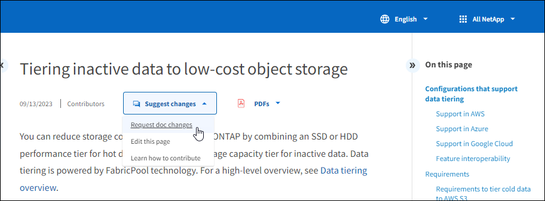
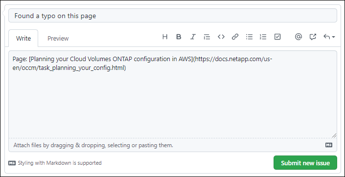
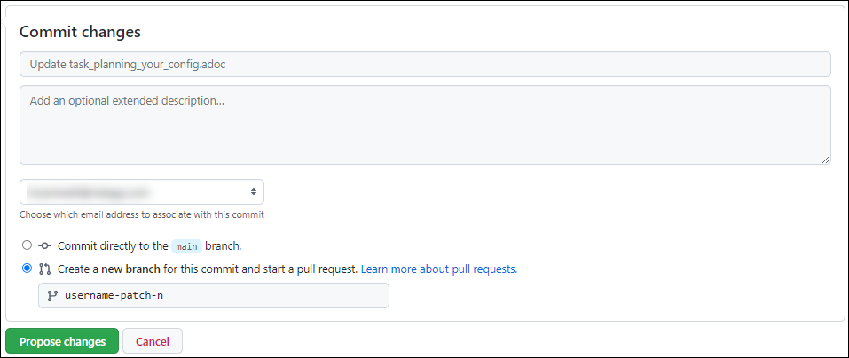
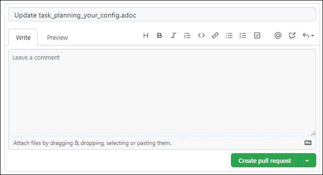

在 GitHub 中提供 NetApp 技术内容
提供者
NetApp 产品和服务的文档为开源文档。这样，您就可以通过改进，更正和建议来为内容做出贡献。您只需要一个 GitHub 帐户和一个小计划即可。
概述
您可以使用以下选项为文档提供内容：
-
单击 * 请求文档更改 * 可提交一般反馈或询问有关内容的问题。然后， NetApp 内容主管会审核您的请求，确定需要对文档进行哪些更改。这是最常见的选项。
-
单击 * 编辑此页面 * 可直接自行编辑内容。然后， NetApp 内容主管会审核您的编辑内容并将其合并。
请求文档更改
提交文档更改请求是向 NetApp 文档提供信息的最常见方式。提交申请后，内容主管将确认他们已收到您的反馈。此时，您将收到 GitHub 发送的电子邮件通知。
如果内容主管同意您的建议可以使内容更好，他们将在之后不久提交更改。您将收到另一条通知，指出您的反馈已被采纳。

|
您提供的所有注释均可公开查看。在 GitHub 报告中导航到问题的任何人都可以看到您的意见。 |
-
如果您还没有 GitHub 帐户， "从 github.com 创建一个"。
-
登录到您的 GitHub 帐户。
-
使用 Web 浏览器打开上的页面 "docs.netapp.com" 这与您的反馈相关。
-
在页面右侧，单击 * 请求文档更改 * 。

此时将打开一个新的浏览器选项卡，其中包含一个表单，您可以使用此表单向文档团队提供详细信息。
-
输入标题，然后提供有关您的请求的详细信息。
注释字段会预先填入页面的标题和 URL 。请勿删除此信息，因为我们需要此信息来了解您的请求。

-
单击 * 提交新问题描述 * 为您的请求创建问题描述。
打开问题描述可以通过 GitHub 注释实现协作。您将根据您在 GitHub 帐户设置中指定的首选项收到电子邮件通知。
您也可以单击 GitHub 搜索框旁边顶部横幅上的 * 问题 * 来查看请求的状态：

提交对文档的编辑
如果您可以自行编辑内容，则可以通过直接编辑源文件来提交您希望看到的确切文档更改。
作为外部贡献者，您无法直接发布更改。内容主管将查看所做的更改，进行任何必要的编辑，然后合并所做的更改。如果发生这种情况， GitHub 会向您发送一封电子邮件通知。
如果您需要有关我们的写入模式或源语法的帮助，可以使用以下资源：
-
如果您还没有 GitHub 帐户， "从 github.com 创建一个"。
-
登录到您的 GitHub 帐户。
-
使用 Web 浏览器打开上的页面 "docs.netapp.com" 要编辑的内容。
-
在页面右侧，单击 * 编辑此页面 * 。

-
单击铅笔图标。

-
编辑内容。
此内容以一种轻量化标记语言 AsciDoc 编写。如果您需要帮助， "单击此处了解 AsciDoc 语法"。
-
要提交更改，请向下滚动页面并填写表单：
-
输入标题和可选问题描述。
-
选择 * 为此提交创建新分支并启动提取请求 * 。
-
单击 * 建议更改 * 。
GitHub 会自动为此更改填写一个分支名称（例如 username-pater-n ）。

-
-
提供有关所做编辑的注释，然后单击 * 创建拉取请求 * 。

在您提出更改建议后，我们将查看这些更改，进行任何必要的编辑，然后将这些更改合并到 GitHub 存储库中。
您可以单击 GitHub 搜索框旁边顶部横幅上的 * 拉取请求 * 来查看拉取请求的状态：

 请求文档变更
请求文档变更 在 GitHub 上编辑
在 GitHub 上编辑 提供者指南
提供者指南